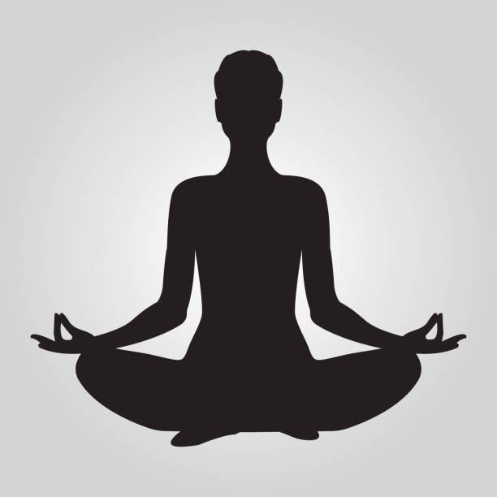

What is Yoga?
In terms of practice, Yoga is a discipline that over 300 million people around the world are actively engaged in. The word “Yoga” literally means “union,” and refers to an inner state where one experiences everything as a part of oneself. Often mistaken for a system of physical exercise, the Yogic system is actually a set of tools for self-transformation that are designed to bring one to this state of union.

How does Yoga work?
Yogic practices are a science and technology for turning inward. Sadhguru defines Yoga as a subjective tool to explore the inner dimension of a human being that is beyond the accumulations of body and mind.
What is the international day of Yoga?
The International Day of Yoga is celebrated annually on 21 June. It was declared to be so by the United Nations General Assembly (UNGA) on December 11, 2014. The date of 21 June was chosen because it is the summer solstice (the longest day of the year in the Northern Hemisphere) and has special significance in the Yogic system.
Why was the International Day of Yoga created?
The proposal for the International Day of Yoga was put forward by the Prime Minister of India, Shri Narendra Modi, and during his address to the UNGA on September 27, 2014. In his speech, he said: “Yoga is an invaluable gift of India’s ancient tradition. This tradition is 5,000 years old. It embodies unity of mind and body; thought and action; restraint and fulfillment; harmony between man and nature; a holistic approach to health and well-being. It is not about exercise but discovery. It is not about strength but sensitivity. It is not about competition but cooperation. It is not about self-assertion but self-restraint. It is not about violence but peace. Yoga can open up a new horizon of peace and harmony.” He proposed that 21 June be declared as the International Day of Yoga and that date was unanimously approved by the UNGA.
What are the health benefits of Yoga?
Although Yoga has many health benefits such as…
- 1.Improved breathing
- 2.Reduced stress
- 3.Improved sleep
- 4.Better heart health
- 5.Higher levels of energy
...and many more, Sadhguru describes good health as merely a side effect of Yoga. Yoga is not just about physical fitness; it is a holistic system that touches every aspect of your being – physical, mental, emotional, and energy-wise.

Will Yoga help with weight loss?
Yoga can help with weight loss but it is only a side effect of the inner transformation that people experience through Yoga. With regular practice, they find that their relationship with their physical body and their eating habits change. However, The main purpose of Yoga is to bring one to a state of union where they experience the entire cosmos as part of themselves. In Sadhguru’s words, “Yoga rejuvenates the system and brings so much sense into you that you will not overeat. Once a certain level of awareness arises in your body, your body becomes such, it will just eat what is needed for it. It will not eat anything more. This is not because you are controlling or regulating your life in any way or because somebody is telling you to go on a diet. If you do some other exercises or dieting processes, you are always trying to control yourself. With Yogic practices, you do not have to control yourself. You just do the practices. This takes care of the system in such a way that it will not allow you to eat more than needed. This is the big difference with Yoga.”
Will Yoga help with back pain?
Many Yoga practitioners have found relief from back pain because Yogic practices address all aspects of human wellbeing. The Yogic system is designed to bring a person to a sense of physical health, mental clarity, emotional pleasantness, and energetic vibrance. Specifically, the spine is given utmost importance in Yoga. Sadhguru explains that without the spine, a human being would be unable to experience higher possibilities. Keeping the spine well-protected, strong, and sensitive is important for a Yogi because you want to experience the whole universe as a part of yourself.
What is Gnana Yoga?
Gnana Yoga is the path of intelligence. Sadhguru describes it as a process of sharpening one’s intelligence to a point where it penetrates through the process of life and shows you what is true and what is not true.
What is Karma Yoga?
Karma Yoga is the path of selfless action. It is the path of service, where one uses physical action to evolve spiritually.
What is Bhakti Yoga?
Bhakti Yoga is the path of devotion, where one uses their emotions to try to reach the ultimate. Sadhguru describes this path as the fastest and sweetest way to grow.
What is Kriya Yoga?
Kriya Yoga is the path of using one’s inner energies to reach the ultimate. Following the path of pure Kriya Yoga is a very demanding but powerful way to walk the spiritual path.
What is Kundalini Yoga?
Kundalini Yoga is a set of practices that allow one to tap into the huge volume of energy within a person that is yet to find its potential. Sadhguru warns that one must be stable and exercise extreme caution before activating the Kundalini. He also reveals that every aspect of Yoga activates Kundalini in some way.
.png)